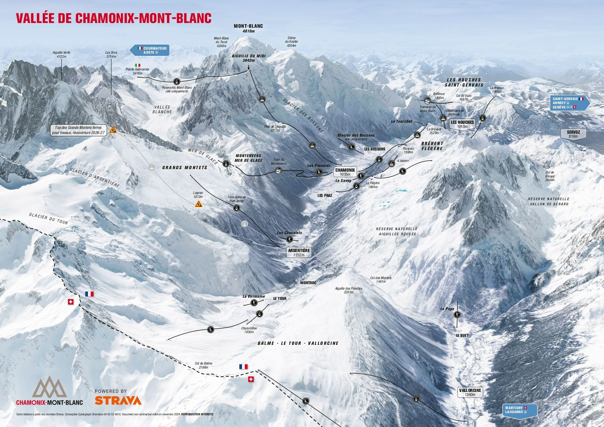
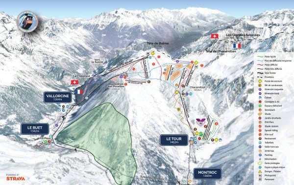
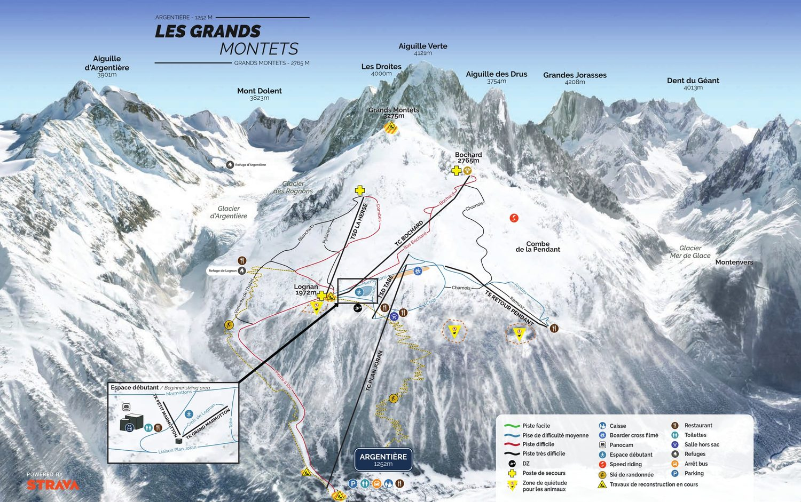
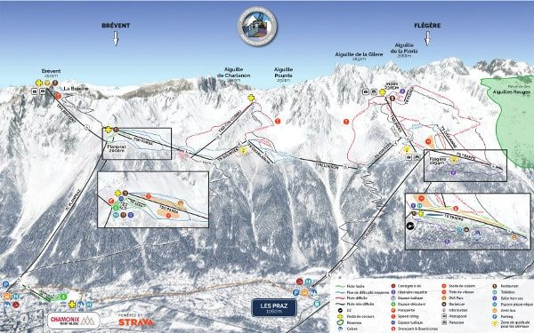
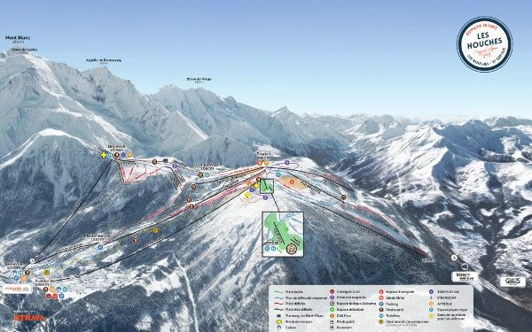

La vallée de Chamonix

Plan des pistes de la vallée (édition 2024-25), via piste-maps.co.uk. Clique sur le plan pour l'agrandir.
Balme – Vallorcine
Le domaine de Vallorcine, relié à celui du Tour. On y est en quelques minutes et la neige y tient bien. Surtout des pistes bleues et rouges, très bien pour un groupe aux niveaux variés.

Les Grands Montets
Au départ d'Argentière, sur la route du retour. Un grand domaine pour tout le monde : chacun y trouve des pistes à son niveau. On y va si la neige et l'ouverture le permettent.

La remontée Argentière–Lognan est en cours de remplacement : ouverture début décembre à vérifier · Site officiel du domaine →
Brévent – Flégère
Deux domaines voisins au-dessus de Chamonix, avec la vue sur tout le massif. Une bonne alternative si les Grands Montets ne sont pas ouverts.

Les Houches
Un domaine sympa, mais bas en altitude : début décembre, il risque de manquer de neige. On n'y va que si les chutes ont été bonnes.

Plans des pistes : piste-maps.co.uk. Versions officielles à jour sur chamonix.com.